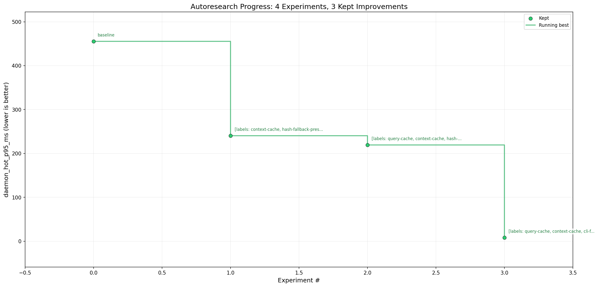
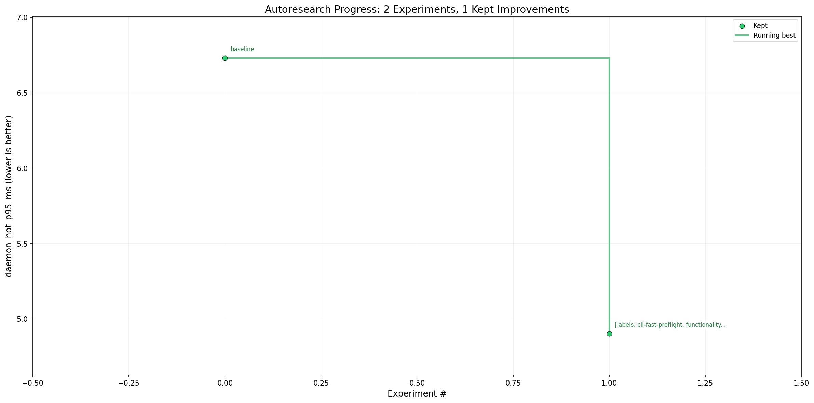

Daemon Hot Query Cache
Warm daemon queries under 6 ms
Benchmark loop against a Linux kernel checkout with explicit daemon/local equivalence checks and full Rust test coverage.
455.37 msbaseline daemon p95
4.90 msbest retained p95
20 / 20daemon/local hits
7 / 0equivalence cases/failures
Main Optimization Loop

| Step | Change | daemon_hot_p95_ms | Delta |
|---|---|---|---|
| Baseline | process-cold CLI vs warm daemon baseline | 455.37 | - |
| 1 | cache daemon SearchContext by workspace and embedding dimension | 240.04 | -215.32 |
| 2 | cache repeated daemon query results behind bounded request/index key | 219.03 | -21.01 |
| 3 | use quick query index health before daemon hot queries | 8.04 | -211.00 |
Final manual validation after cleanup measured daemon_hot_p95_ms = 5.88 with daemon_hits = 20 and local_hits = 20.
Regression Exploration Loop

| Step | Change | daemon_hot_p95_ms | Delta |
|---|---|---|---|
| Baseline | post-main-loop 9-sample baseline | 6.73 | - |
| 1 | skip daemon Status preflight for static hot-query runs with existing socket | 4.90 | -1.83 |
The explore guard kept daemon/local JSON equivalence explicit: 7 representative cases, 0 failures, including --all after single-workspace cache warmup.
Validation
cargo fmt -- --checkcargo clippy --locked --all-targets -- -D warningscargo test --locked --all-targetspython3 -m py_compile scripts/bench_daemon_hot_query.py scripts/check_daemon_equivalence.pypython3 scripts/check_daemon_equivalence.py --bench-home /tmp/ivygrep-daemon-equivalence-home